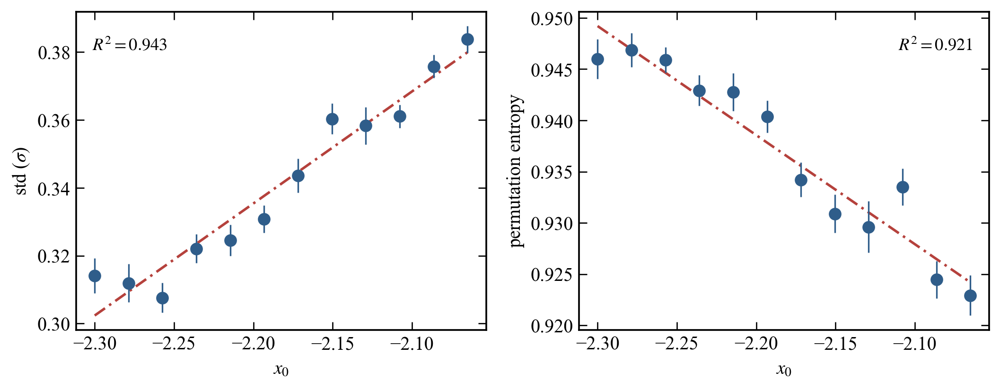

01
가상 뇌 신호 만들기
Epileptor라는 수학적 모형에서 정상 상태의 합성 신호를 만듭니다. 실제 환자 기록은 쓰지 않았습니다.
AICP 2026 · 협업 연구 시각화
뇌 활동의 수학적 모형 Epileptor로 만든 신호만 사용했습니다. 디지털 트윈이 정상 상태를 유지하는 비율을 따라가며, 어디에서 정상에서 벗어나기 시작하는지 직접 확인해 보세요.
시뮬레이션 연구입니다. 환자 데이터나 임상 발작 예측 결과가 아닙니다.
THE QUESTION · 연구 질문
‘정상’으로 만든 신호에서만 패턴을 배우고, 신호의 통계값을 조금씩 바꿔 새 궤적을 생성했습니다. 각 위치에서 30번 반복해 몇 개가 끝까지 정상으로 남는지 셉니다.
Epileptor라는 수학적 모형에서 정상 상태의 합성 신호를 만듭니다. 실제 환자 기록은 쓰지 않았습니다.
디지털 트윈은 신호와 측정한 통계값을 받습니다. 모형의 숨은 파라미터와 전이 이후 신호는 학습에 넣지 않습니다.
통계 좌표를 움직이며 30개 궤적을 생성합니다. 정상 유지 비율이 처음 50% 아래로 내려가는 위치를 찾습니다.
EXPLORE THE DATA · 결과 탐색
점과 선은 저장소의 잠긴 실험 결과에서 가져왔습니다. 슬라이더를 움직이면 선택한 좌표의 30개 반복 결과가 바뀝니다.
SINGLE NODE EPILEPTOR
신호의 표준편차(σ)를 조건으로 바꾸며 정상 유지 비율을 살펴봅니다. 가로축은 측정 통계값입니다.
선택한 위치 · DIGITAL TWIN
15/ 30 궤적이 정상 유지
나머지 궤적은 정해 둔 정상 이탈 기준에 걸렸습니다.
단일 노드 그래프는 관찰된 재상승을 다루기 위해 사후에 더한 탐색적 기준을 적용했습니다. 이 기준으로 모델 선택과 독립 시험을 다시 수행한 확정 결과는 아닙니다.
참조 모형(GT)은 생성에 사용한 Epileptor를 별도로 시험한 결과입니다. 두 곡선의 가로축 정렬은 정상 자료로 만든 보정식을 사용하며, 학습 범위 밖에서는 외삽이 포함됩니다.
HOW IT WORKS · 실험 과정
경계 위치를 암기한 모델인지 확인하려면 정보가 들어가는 순서를 살펴야 합니다.
단일 노드는 표준편차와 순열 엔트로피, 3노드는 노드 평균과 표준편차를 사용합니다.
모형의 숨은 흥분성 파라미터는 트윈에 주지 않았습니다. 모델 선택에도 전이 이후 궤적을 사용하지 않았습니다.
새 통계 좌표마다 독립 궤적 30개를 생성하고 참조 모형과 같은 정상 이탈 규칙을 적용했습니다.
LOOK CLOSER · 실제 실험 그림
아래 그림은 저장소의 발표용 결과입니다. 정상·이탈 조건에서 참조 모형과 디지털 트윈의 신호를 나란히 보여 줍니다.


이 그림의 숨은 파라미터는 결과를 비교하기 위한 축입니다. 트윈의 조건 입력에는 넣지 않았습니다.
READ WITH CARE · 해석과 한계
두 실험의 50% 경계는 참조 모형과 가까웠습니다. 이 수치가 어떤 범위의 주장인지는 함께 봐야 합니다.
이 결과는 정해진 판정 규칙에서 정상 궤적이 줄어드는 위치를 보여 줍니다. 수학적 분기점 증명이나 임상 진단은 아닙니다.
특히 이탈 뒤 디지털 트윈 출력은 상·하한에 포화되곤 합니다. 이를 충실한 발작 모사로 볼 수 없습니다.
신뢰구간은 반복 궤적의 변동을 반영합니다. 저수지 시드 전체와 모형 구조의 불확실성까지 포함하지 않습니다.
단일 노드 정상 검증에서는 3/18, 3노드의 긴 학습 범위에서도 간헐적 거짓 이탈이 있었습니다. 임상 예측 성능을 뜻하지 않습니다.
TAKE THE NEXT STEP
연구 기여: Taehyeong Kim, Homin Son, Seonggyu Jang, Hyeonmin Hwang · 지도: Pilwon Kim (UNIST)